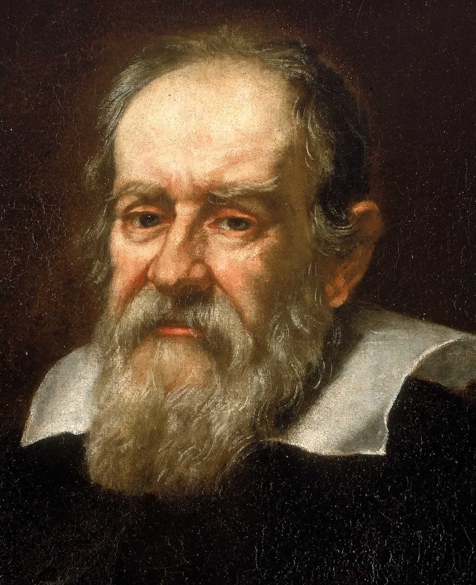

Cercetare pre-telescopică
Observarea lui Jupiter datează cel puțin din timpul astronomiei babiloniene din secolul al VII-lea sau al VIII-lea î.Hr. Chinezii antici, de asemenea, au observat orbita lui Suìxīng (歲星) și i-au stabilit ciclul de 12 ramuri terestre; limba chineză folosește în continuare numele său (simplificat ca 岁) atunci când se referă la ani. Până în secolul al IV-lea î.Hr., aceste observații s-au dezvoltat în zodiacul chinezesc. Aceste credințe supraviețuiesc în unele practici religioase taoiste și în cele douăsprezece animale ale zodiacului din Asia de Est. Acest lucru este posibil deoarece sateliții galileeni pot fi văzuți cu ochiul liber în condiții favorabile, deși se sting de obicei în strălucirea lui Jupiter. Istoricul chinez Xi Zezong a susținut că Gan De, un astronom antic chinez, a descoperit unul din sateliții lui Jupiter în 362 î.Hr., cu ochiul liber. Dacă acest lucru este adevărat, atunci această descoperire anticipează descoperirea lui Galileo cu aproape două milenii.
Observații telescopice terestre
În 1610, astronomul italian Galileo Galilei a descoperit,cu ajutorul unui telescop pe care l-a construit, patru dintre cei mai mari sateliți ai lui Jupiter (acum cunoscuți sub numele de sateliții galileeni). Această descoperire este considerată prima observație telescopică a sateliților non-tereștri. La o zi după Galileo, Simon Marius a descoperit în mod independent sateliți în jurul lui Jupiter, deși nu și-a publicat descoperirea într-o carte până în 1614. Au rămas denumirile date de Marius pentru cei patru sateliți: Io, Europa, Ganymede și Callisto. Sprijinul deschis al lui Galileo pentru teoria lui Copernic l-a plasat sub amenințarea Inchiziției. A devenit un argument important în favoarea teoriei heliocentrice a lui Copernic. Aceste descoperiri au reprezentat prima dovadă că mișcarea corpurilor cerești nu este numai în jurul Pământului.
În anii 1660, Giovanni Cassini a observat pete și dungi colorate pe Jupiter folosind un nou telescop și, de asemenea, a observat că planeta părea turtită; adică aplatizată la poli. De asemenea, el a fost capabil să estimeze perioada de rotație a planetei. În 1690, Cassini a observat că atmosfera este supusă unei rotații diferențiale.
Este posibil ca Marea Pată Roșie, o caracteristică proeminentă în formă ovală în emisfera sudică a planetei, să fi fost observată încă din 1664 de Robert Hooke și în 1665 de Cassini, deși acest lucru este contestat. Astronomul german Heinrich Schwabe a produs primul desen cunoscut pentru a arăta detalii despre Marea Pată Roșie în 1831.
Marea Pată Roșie a fost pierdută din vedere în mai multe rânduri între 1665 și 1708, înainte de a deveni destul de vizibil în 1878. A fost înregistrată ca decolorată din nou în 1883 și la începutul secolului XX. Acest lucru ar fi putut fi rezultatul unei scăderi temporare a intensității acestui anticiclon, care se crede că dă materialul mai întunecat preluat din straturile mai adânci ale atmosferei.
Atât Giovanni Borelli, cât și Cassini au realizat cu atenție tabele ale mișcărilor sateliților lui Jupiter, permițând predicțiile momentelor în care sateliții vor trece înainte sau în spatele planetei. Ole Rømer a dedus că lumina nu circulă instantaneu (concluzie pe care Cassini a respins-o anterior), și această discrepanță de sincronizare a fost utilizată pentru a estima viteza luminii. În anii 1670, s-a observat că atunci când Jupiter se afla în partea opusă Soarelui față de Pământ, aceste evenimente aveau loc cu 17 minute mai târziu decât se aștepta.
Descoperirea acestui obiect relativ mic relativ mic, mărturie a vederii sale puternice, l-a făcut repede celebru. Mai târziu, acest satelit a fost numit Amalthea. A fost ultimul satelit planetar descoperit direct prin observarea vizuală. În 1892, E. E. Barnard a observat un al cincilea satelit al lui Jupiter folosind un refractor de 910 mm la Observatorul Lick din California.
În 1932, Rupert Wildt a identificat liniile spectrale ale amoniacului și metanului în spectrul lui Jupiter.
Au fost observate trei ovale albe în centura temperată sudică a atmosferei lui Jupiter, care sunt anticicloni puternici. Timp de câteva decenii acestea au rămas clar vizibile, apropiindu-se ocazional, dar rămânând formațiuni separate. În 1998, două dintre aceste ovale s-au contopit într-un singur sistem de furtună, care apoi a absorbit al treilea în 2000, devenind Oval BA.
Cercetarea cu radiotelescopul

În 1955, Bernard Burke și Kenneth Franklin au detectat emisii de semnale radio provenite de la Jupiter cu o frecvență de 22,2 MHz. Perioada acestor emisii se potrivește cu rotația planetei și, de asemenea, ei au putut folosi aceste informații pentru a rafina rata de rotație.
Oamenii de știință au descoperit că există trei forme de semnale radio transmise de la Jupiter:
- Emisiile radio decametrice (cu o lungime de undă de zeci de metri) variază în funcție de rotația lui Jupiter și sunt influențate de interacțiunea lui Io cu câmpul magnetic al lui Jupiter.
- Emisiile radio decimetrice (cu lungimi de undă măsurate în centimetri) observate pentru prima dată de Frank Drake și Hein Hvatum în 1959.[35] Originea acestui semnal provenea de la o centură în formă de tor în jurul ecuatorului lui Jupiter. Acest semnal este cauzat de radiația ciclotronă de la electroni care sunt accelerați în câmpul magnetic al lui Jupiter.
- Radiația termică este radiată prin atmosfera lui Jupiter.
Explorare
Din 1973, o serie de nave spațiale automatizate au vizitat Jupiter. Zborurile către alte planete se efectuează în detrimentul energiei, care este adesea descrisă de parametrul delta-v, adică schimbarea vitezei nete a navei spațiale. Prima a fost Pioneer 10, prima navă spațială care s-a apropiat suficient de Jupiter pentru a trimite înapoi date despre proprietățile și fenomenele celei mai mari planete a Sistemului Solar.
Intrarea pe un transfer orbital Hohmann de pe orbita joasă a Pământului spre Jupiter necesită o delta-v egală cu 6,3 km/s, care este comparabilă cu delta-v necesară pentru a ajunge pe orbita joasă a Pământului, egală cu 9,7 km/s. Asistența gravitațională poate fi folosită pentru zboruri interplanetare, economisind energie însă cu costul unei durate de zbor mult mai lungi.
Misiuni de survol
Începând cu 1973, mai multe nave spațiale au zburat în jurul planetei, apropiindu-se de o distanță convenabilă pentru observarea lui Jupiter. Ocultarea semnalelor radio de către planetă a ajutat la determinarea mai bună a diametrului lui Jupiter și a aplatizării sale. S-a constatat că radiațiile din apropierea planetei erau mult mai puternice decât se așteptau, dar ambele sonde Pioneer au reușit să supraviețuiască în acest mediu.
Șase ani mai târziu, misiunile Voyager au îmbunătățit mult înțelegerea sateliților galileeni și au descoperit inelele lui Jupiter. De asemenea, ele au confirmat că Marea Pată Roșie era un imens anticiclon. De-a lungul căii orbitale a lui Io a fost descoperit un tor de atomi ionizați și pe suprafața satelitului au fost descoperite urme de erupții vulcanice; unii vulcani au fost activi chiar în timpul misiunii. Comparația de imagini a arătat că Pata Roșie și-a schimbat culoarea de la misiunile Pioneer, de la portocaliu la maro închis. În timp ce nava spațială trecea în spatele planetei, a observat fulgerări în atmosfera de noapte.
Următoarea misiune trimisă la Jupiter a fost sonda spațială Ulysses, care a folosit o manevră gravitațională lângă Jupiter pentru a ajunge pe orbită în jurul Soarelui. În timpul acestui zbor, sonda a efectuat cercetări asupra magnetosferei lui Jupiter. Ulysses nu avea camere foto, așa că nu au fost făcute imagini. Al doilea survol a avut loc șase ani mai târziu însă la o distanță mult mai mare.
În 2000, nava spațială Cassini a zburat lângă Jupiter în drum spre Saturn și a oferit unele dintre imaginile de cea mai înaltă rezoluție făcute vreodată planetei. La 19 decembrie 2000, sonda a fotografiat satelitul Himalia, dar rezoluția a fost prea mică pentru a dezvălui detalii de suprafață.
Sonda New Horizons a survolat Jupiter pentru asistență gravitațională în drum spre Pluto. Cea mai apropiată abordare a fost cea din 28 februarie 2007. Senzorii sondei au măsurat producția de plasmă de la vulcani de pe Io și au studiat în detaliu toți cei patru sateliți galileeni, și a observat de la distanță sateliții Himalia și Elara. Fotografierea sistemului Jupiter a început la 4 septembrie 2006.
Misiunea Galileo
Aceasta a orbitat planeta timp de mai bine de șapte ani, survolând toți sateliții galileeni și Amalthea. Prima navă spațială care a orbitat Jupiter a fost sonda Galileo, care a intrat pe orbită la 7 decembrie 1995. Deși cantitatea de informații trimise de sonda Galileo a fost uriașă, lățimea de bandă preconizată a legăturii radio a fost limitată de o implementare eșuată a antenei radio. Nava a fost martora impactului cometei Shoemaker-Levy 9 cu Jupiter în 1994, oferind o oportunitate unică de a observa acest eveniment.
În iulie 1995, o sondă atmosferică de titan de 340 de kilograme a fost eliberată din nava spațială, și a intrat în atmosfera lui Jupiter la 7 decembrie. Sonda Galileo însăși a experimentat o versiune mai rapidă a aceleiași soarte atunci când a fost direcționată în mod deliberat către un curs de coliziune cu planeta la 21 septembrie 2003, cu o viteză de peste 50 km/s. Apoi s-a topit și probabil s-a evaporat. Oamenii de știință au decis să facă acest pas pentru a evita orice posibilitate de impact și posibilă contaminare a Europei - satelitul, despre care se crede că are condițiile necesare pentru a adăposti viața.
Datele acestei misiuni au relevat că hidrogenul compune până la 90% din atmosfera lui Jupiter. Temperatura înregistrată a fost mai mare de 300 °C și viteza vântului a măsurat mai mult de 644 km/h înainte ca sondele să fie vaporizate.
Misiunea Juno

Misiunea NASA Juno a ajuns la Jupiter la 5 iulie 2016 pentru a începe o investigație științifică a planetei. De asemenea, va căuta indicii despre cum s-a format planeta, inclusiv dacă are un nucleu stâncos, cantitatea de apă prezentă în atmosfera profundă, distribuția masei și vânturile ei adânci, care pot atinge viteze de până la 618 km/h. Misiunea lui Juno este de a măsura compoziția lui Jupiter, câmpul gravitațional, câmpul magnetic și magnetosfera polară. Orbitele au fost planificate cu atenție pentru a reduce la minimum contactul cu centurile de radiații dense ale lui Jupiter, care pot deteriora electronica vehiculului spațial și panourile solare.
Misiuni viitoare
Următoarea misiune planificată a sistemului jovian va fi Jupiter Icy Moon Explorer (JUICE) a Agenției Spațiale Europene care va fi lansată în 2023, urmată în 2024 de misiunea Europa Clipper a NASA.
Misiuni anulate
A existat un mare interes în studierea în detaliu a sateliților înghețași din cauza posibilității unor oceane lichide subterane pe Europa, Ganymede și Callisto. Dificultățile de finanțare au întârziat progresul. Misiunea NASA Jupiter Icy Moons Orbiter a fost anulată în 2005. O propunere ulterioară a fost dezvoltat pentru o misiune în colaborare NASA/ESA numită EJSM/Laplace, cu o dată de lansare provizorie în jurul anului 2020. EJSM/Laplace ar fi constat în Jupiter Europa Orbiter al NASA și Jupiter Ganymede Orbiter al ESA. ESA a încheiat oficial parteneriatul în aprilie 2011, citând probleme bugetare la NASA și consecințele asupra calendarului misiunii. În schimb, ESA a planificat să meargă înainte cu o misiune unică europeană, Jupiter Icy Moon Explorer (JUICE).